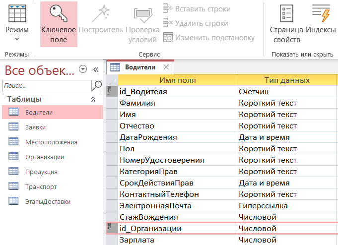
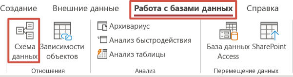
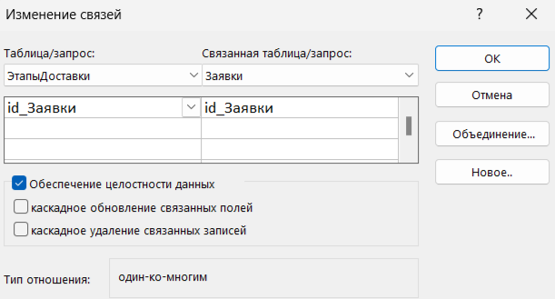
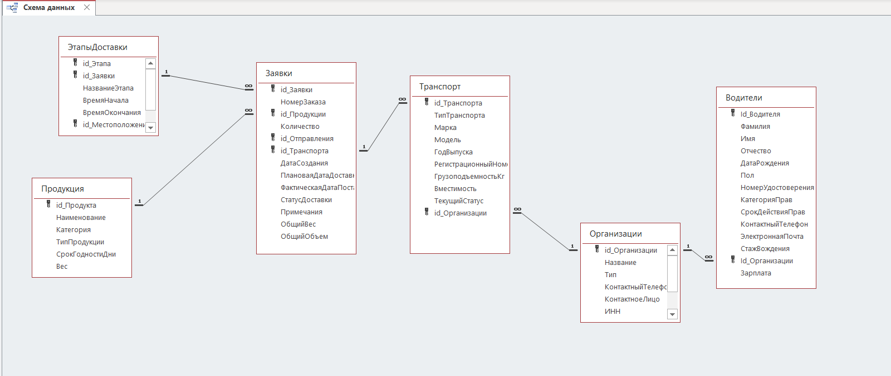

Проектирование структуры базы данных
Теоретическая часть
Цель работы: Приобретение практических навыков работы с реляционной СУБД (Система Управления Базами Данных) Microsoft Access
— Создание таблиц в режиме конструктора и режиме таблицы.
— Настройка структуры таблиц (поля, типы данных, свойства).
— Определение первичных ключей и индексов.
— Заполнение таблиц тестовыми данными.
Основные понятия
— Таблица – основной объект базы данных, состоящий из строк (записей) и столбцов (полей).
— Первичный ключ (Ключевое поле) – уникальное поле, идентифицирующее запись (например, id_Водителя).
Типы данных в Access:
— Текстовый – для строк (например, названия факультетов).
— Числовой – для числовых значений (годы, коды).
— Дата/время – для хранения дат.
— Гиперссылка – для URL-адресов.
— Поле MEMO – для длинного текста (аннотации).
— Индексы – ускоряют поиск, но могут замедлять вставку данных.
— Режимы создания таблиц
— Режим таблицы – простой ввод данных без детальной настройки.
— Режим конструктора – полный контроль над структурой (типы данных, свойства полей).
Практическая часть
1. Запустите программу Microsoft Access.
2. На вкладке «Главная» выберите пункт «Пустая база данных»
3. В появившемся окне укажите имя файла Логистика и его расположение на вашем диске, и нажмите на кнопку Создать
4. Теперь у нас создалась база данных, по умолчанию у нас уже будет создана таблица с именем Таблица1.
5. Нажимаем на нее правой кнопкой мыши и сохраняем под именем Водители
6. Далее нажимаем правой кнопкой мыши на таблицу «Водители» и переходим в режим Конструктор
Таблица 1 - Структура таблицы «Водители»
| Имя поля | Тип данных | Свойства поля |
|---|---|---|
| Id_Водителя | Счетчик | - |
| Фамилия | Текстовый (Короткий текст) | Размер поля – 60, Обязательное поле – Да, Пустые строки - Нет |
| Имя | Текстовый (Короткий текст) | Размер поля – 30, Обязательное поле – Да, Пустые строки - Нет |
| Отчество | Текстовый (Короткий текст) | Размер поля – 30, Обязательное поле – Да, Пустые строки - Нет |
| ДатаРождения | Дата и время | Обязательное поле – Да |
| Пол | Текстовый (Короткий текст) | Вкладка – Подстановка Тип элемента управления: Поле со списком Тип источника строк: Список значений Источник строк: Мужчина, Женщина |
| НомерУдостоверения | Текстовый (Короткий текст) | - |
| КатегорияПрав | Текстовый (Короткий текст) | - |
| СрокДействияПрав | Дата и время | - |
| КонтактныйТелефон | Текстовый (Короткий текст) | - |
| ЭлектроннаяПочта | Гиперссылка | - |
| СтажВождения | Числовой | - |
| Id_Организации | Числовой | Обязательное поле – Да, Индексированное поле – Да (Допускаются совпадения) |
| Зарплата | Числовой | - |
7. Также для таблицы «Водители» мы должны определить ключевое поле «id_Водителя» и «id_Организации». Ключевое поле – это одно или несколько полей, которое позволяет однозначно идентифицировать запись, отличить одну запись от другой.

8. Создаем таблицу «Заявки»:
Таблица 2 - Структура таблицы «Заявки»
| Имя поля | Тип данных | Свойства поля |
|---|---|---|
| Id_Заявки | Счетчик | - |
| НомерЗаказа | Текстовый (Короткий текст) | Размер поля - 100, Обязательное поле - Да, Пустые строки - Нет |
| Id_Продукции | Числовой | Обязательное поле – Да, Индексированное поле – Да (Допускаются совпадения) |
| Количество | Числовой | - |
| Id_Отправления | Числовой | Обязательное поле – Да, Индексированное поле – Да (Допускаются совпадения) |
| Id_Транспорта | Числовой | Обязательное поле – Да, Индексированное поле – Да (Совпадения не допускаются) |
| ДатаСоздания | Дата и время | Обязательное поле – Да |
| ПлановаяДатаДоставки | Дата и время | Обязательное поле – Да |
| ФактическаяДатаДоставки | Дата и время | - |
| СтатусДоставки | Текстовый (Короткий текст) | Вкладка – Подстановка Тип элемента управления: Поле со списком Тип источника строк: Список значений Источник строк: Создана, В обработке, В пути, Доставлена, Отменена |
| Примечания | Длинный текст (Поле МЕМО) | - |
| ОбщийВес | Числовой | - |
| ОбщийОбъем | Числовой | - |
9. Создаем таблицу «Местоположения»:
Таблица 3 - Структура таблицы «Местоположение»
| Имя поля | Тип данных | Свойства поля |
|---|---|---|
| Id_Местоположения | Счетчик | - |
| Название | Текстовый (Короткий текст) | Размер поля - 100, Обязательное поле - Да, Пустые строки - Нет Индексированное поле - Да (Совпадения не допускаются) |
| Адрес | Текстовый (Короткий текст) | Обязательное поле - Да, Пустые строки - Нет |
| Тип | Текстовый (Короткий текст) | Вкладка – Подстановка Тип элемента управления: Поле со списком Тип источника строк: Список значений Источник строк: Склад, Магазин, Производство |
| КонтактныйТелефон | Числовой | - |
| КонтактноеЛицо | Текстовый (Короткий текст) | - |
| ЧасыРаботы | Текстовый (Короткий текст) | - |
10. Создаем таблицу «Организации»:
Таблица 4 - Структура таблицы «Организации»
| Имя поля | Тип данных | Свойства поля |
|---|---|---|
| Id_Организации | Счетчик | - |
| Название | Текстовый (Короткий текст) | Размер поля - 255 Обязательное поле - Да, Пустые строки – Нет, |
| Тип | Текстовый (Короткий текст) | Вкладка – Подстановка Тип элемента управления: Поле со списком Тип источника строк: Список значений Источник строк: Поставщик, Перевозчик, Получатель |
| КонтактныйТелефон | Текстовый (Короткий текст) | Обязательное поле - Да, Пустые строки – Нет, |
| КонтактноеЛицо | Текстовый (Короткий текст) | Обязательное поле - Да, Пустые строки – Нет, |
| ИНН | Текстовый (Короткий текст) | |
| ЮридическийАдрес | Текстовый (Короткий текст) | Обязательное поле - Да, Пустые строки – Нет, |
| ФактическийАдрес | Текстовый (Короткий текст) | Обязательное поле - Да, Пустые строки – Нет, |
| БанковскийРеквизиты | Текстовый (Короткий текст) | - |
11. Создаем таблицу «Организации»:
Таблица 5 - Структура таблицы «Продукция»
| Имя поля | Тип данных | Свойства поля |
|---|---|---|
| Id_Продукта | Счетчик | - |
| Наименование | Текстовый (Короткий текст) | Размер поля – 255, Обязательное поле – Да, Пустые строки – Нет, |
| Категория | Числовой | Обязательное поле - Да, Пустые строки – Нет, |
| ТипПродукции | Текстовый (Короткий текст) | Обязательное поле – Да, Пустые строки – Нет, |
| СрокГодности | Текстовый (Короткий текст) | Обязательное поле – Да, Пустые строки – Нет, |
| Вес | Числовой | - |
12. Создаем таблицу «Транспорт»:
Таблица 6 - Структура таблицы «Транспорт»
| Имя поля | Тип данных | Свойства поля |
|---|---|---|
| Id_Транспорта | Счетчик | - |
| ТипТранспорта | Текстовый (Короткий текст) | Вкладка – Подстановка Тип элемента управления: Поле со списком Тип источника строк: Список значений Источник строк: Грузовик, Фургон, Рефрижератор |
| Марка | Текстовый (Короткий текст) | Обязательное поле – Да, Пустые строки – Нет, Индексированное поле - Да (Совпадения допускаются) |
| Модель | Текстовый (Короткий текст) | Обязательное поле – Да, Пустые строки – Нет, |
| ГодВыпуска | Дата и время | - |
| РегистрационныйНомер | Текстовый (Короткий текст) | Обязательное поле – Да, Пустые строки – Нет, |
| ГрузоподъемностьКг | Текстовый (Короткий текст) | Размер поля - 150 |
| Вместимость | Числовой | - |
| Id_Водителя | Числовой | - |
| ТекущийСтатус | Текстовый (Короткий текст) | Вкладка – Подстановка Тип элемента управления: Поле со списком Тип источника строк: Список значений Источник строк: Свободен, В рейсе, На ТО, Ремонт |
| Id_Организации | Числовой | - |
13. Создаем таблицу «ЭтапыДоставки»:
Таблица 7 - Структура таблицы «Этапы доставки»
| Имя поля | Тип данных | Свойства поля |
|---|---|---|
| Id_Этапа | Счетчик | - |
| Id_Заявки | Числовой | - |
| НазваниеЭтапа | Текстовый (Короткий текст) | Обязательное поле – Да, Пустые строки – Нет, |
| ВремяНачала | Текстовый (Короткий текст) | Обязательное поле – Да, Пустые строки – Нет, |
| ВремяОкончания | Текстовый (Короткий текст) | Обязательное поле – Да, Пустые строки – Нет, |
| Id_Местоположения | Числовой | - |
| Ответственный | Числовой | Обязательное поле – Да, Пустые строки – Нет, Индексированное поле - Да (Совпадения не допускаются) |
| Статус | Текстовый (Короткий текст) | Вкладка – Подстановка Тип элемента управления: Поле со списком Тип источника строк: Список значений Источник строк: Завершен, В процессе |
14. Мы создали 7 таблиц, прежде чем их заполнять данными и работать с ними мы должны связать их, для этого в программе Microsoft Access существует вкладка «Схема данных». Схема данных – это средство графического отображения логической структуры базы данных. Существуют также и типы связей, например:
— Один-ко-многим (1: N) – Один факультет = Много направлений
— Один-ко-одному (1:1) – Используется редко. Например, паспортные данные студента
— Многие-ко-многим (M: N) – Требует промежуточной таблицы (например, Сессия связывает студентов и дисциплины)
15. Для построения схемы данных нашей базы данных «Студенты» мы должны перейти на вкладку «Работа с базами данных» и выбрать «Схема данных»

16. Откроется вкладка «Схемы данных» базы данных «Системы управления транспортом и логистикой». Там уже будут созданы несколько таблиц, выделяем их и удаляем.
17. Далее правой кнопкой мыши вызываем контекстное меню и добавляем все наши таблицы.
18. Для установки связи между полями мы зажимаем поле одной таблицы и перетягиваем к другой таблице.
19. При установке связи всплывает окно «Изменение связи», мы должны указать все три пункта:
— Обеспечение целостности данных;
— Каскадное обновление связанных полей;
— Каскадное удаление связанных записей.


20. Сохраните и закройте проект